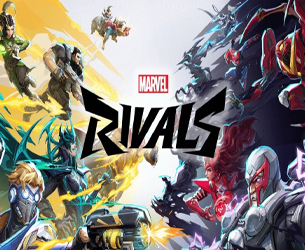
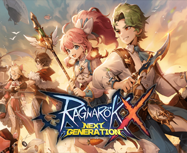
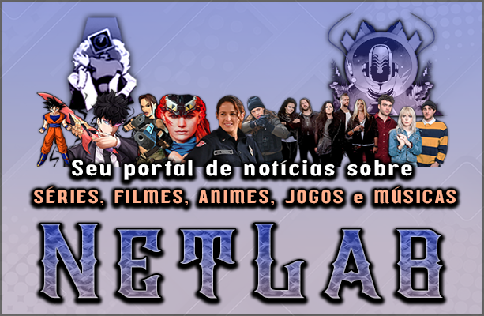
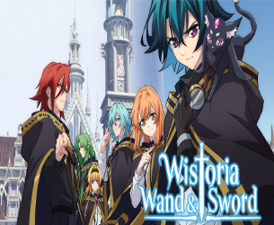
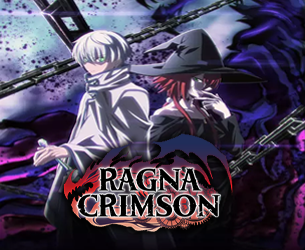

|
 |
| 01 / 01 / 2026 |
Vamos conversar sobre algumas mudanças que vão acontecer no canal: |
|  |
 |
| Sim, eu decidi que pode ser interessante manter o Marvel Rivals e Ragnarok X Next Generation como jogos principais das lives por tempo indeterminado; esse Ragnarok está sendo muito bem falado ultimamente, a Gravity (desenvolvedora da franquia) tem ouvido bastante a comunidade a respeito de fazer melhorias, trazer atualizações que se adaptem melhor ao que os jogadores buscam e eu descobri que esse Ragnarok tem versão de PC, inicialmente eu pensava que só existia a versão mobile, mas descobri que no site tem a versão própria para pc, o que é um ponto bastante positivo na minha opinião. Um breve resumo sobre algumas coisas que eu soube que este Ragnarok tem são: sistema de guildas, é possível jogar com até 4 amigos; dois fatos bastante interessantes é que existem dungeons que são extremamente difíceis e desafiadoras, algo que me agrada bastante pois eu gosto de dificuldade; e o outro fato é que o jogo permite a troca de classes, com um mesmo personagem, ou seja, não exige que o jogador crie do zero um outro personagem. |
|  |
Certo eu vou fazer um resumo aqui:
Netlab é um projeto que eu criei já faz um tempo; ele chegou a ser até mesmo podcast nas lives, depois eu modifiquei para podcast somente em formato de áudio, depois de um tempo criei um site de notícias onde eu publiquei algumas notícias lá; mas não deu certo por muito tempo devido a falta de espaço de armazenamento do site; mas pensando bem isso me parece ótimo; pois eu acho que seria interessante eu fazer um resumo das notícias e colocar no início das lives, antes de começar de fato e sim na tela de espera das lives, enquanto quem entrar para assistir vai ouvir músicas, vai poder também ver o resumo de notícias do dia, claro, isso vai ser interessante para quem gosta de séries, filmes, animes, jogos e músicas; e as notícias serão escritas por mim, então a partir do dia 05 / 01 este novo formato já vai estar presente nas lives.
Agora vamos para o penúltimo assunto dessa postagem; as metas, coisas que poucas pessoas sabem:
Eu já havia mencionado anteriormente nas lives, sobre aumentar o tempo de live em 30 minutos e uma hora, então criei duas metas:
R$ 25,00 seriam para aumentar o tempo da live do dia em 30 minutos, enquanto R$ 50,00 seriam para aumentar em uma hora, mas recentemente eu resolvi que uma terceira meta agora vai ser inserida:
R$ 100,00 > live no SÁBADO (da mesma semana), sim, eu estou disposta a trabalhar aos sábados também; porém as FerzaGold (moeda de resgate de prêmios da loja do canal) NÃO vai estar funcionando nas lives de sábados. |
|  |
 |
Sim, animes ! Ás sextas-feiras teremos esse diferencial de forma permanente nas lives, isso é para promover mais intereração e é interessante pois podemos falar sobre as histórias. Vamos recomeçar com o anime "Wistoria Wand & Sword"
Wistoria Wand & Sword
[SINOPSE]
Will Serfort quer chegar ao topo de uma torre mágica para cumprir uma promessa, mas ele tem um "pequeno" detalhe contra ele: ele não sabe usar magia nenhuma em um mundo onde a magia é tudo.
Para não ser expulso da escola de bruxos, ele faz o que ninguém mais faz: desce na porrada. Enquanto os outros usam varinhas, ele usa uma espada e força física bruta para caçar monstros na masmorra e ganhar pontos.
Vamos começar a ver esse anime na SEXTA-FEIRA 09 / 01
Quando de fato terminarmos ele vamos para o anime:
Ragna Crimson
[SINOPSE]
Ragna é um caçador de dragões fraco que só sobrevive às custas da parceira prodígio. Um dia, ele recebe uma "transferência de dados" do seu eu do futuro, que ficou absurdamente forte, mas perdeu tudo e todos.
Com os poderes e memórias do futuro, o Ragna do presente vira uma máquina de matar dragões. Ele se junta a Crimson — um dragão traidor que quer destruir a própria raça — e parte em uma missão suicida: exterminar todos os dragões do mundo, custe o que custar.
Eu não sei se vai dar tempo de terminar o Wistoria Wand & Sword em uma live só, mas podemos tentar. |
|
| 27 / 12 / 2025 |
Apesar dessa pequena pausa nas lives, devido as festividades de fim de ano; eu permaneço animada para continuar com as lives, continuar persistindo me dedicando e quero conversar com vocês, a respeito do SERVIDOR NOVO no DISCORD; eu sei que já criei vários, e depois de um tempo eu deletei, desisti, devido a falta de interação; mas dessa vez eu quero que seja um servidor permanente, mesmo se tiver pouca ou nenhuma interação, pois eu tenho algumas idéias para que ele seja mais focado em entretenimento. As lives retornam no dia 05 / 01 segunda-feira. |
|
|
|